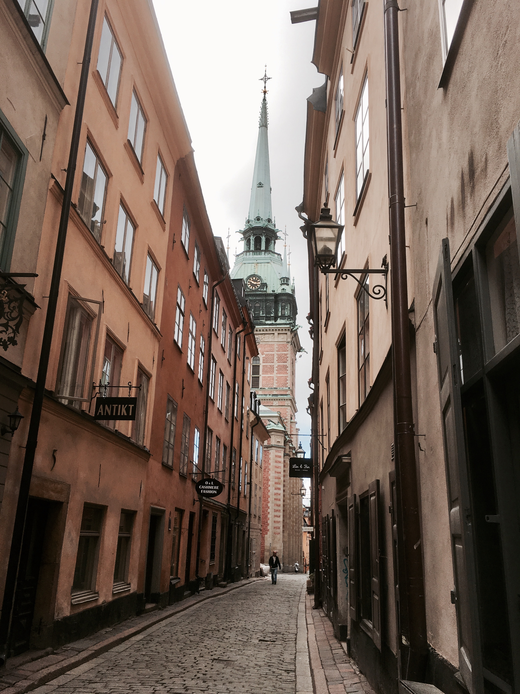

The biggest city and capital of Sweden, Stockholm even proudly calls itself the capital of Scandinavia. It has great architeture, beautiful nature, and friendly people. If you are a fan of Scandinavian design, Stockholm is a city you must see. From apparel to furniture, you will always find something you like. The following are some of my tips:
- Gamla Stan - It is the old town, where Stockholm first started. Has lots of well preserved, centuries-old buildings and stone streets. When you walk through those narrow alleys, you feel as if you're back in the old days of Stockholm.
- Island Hopping - Stockholm consist of 14 islands, and the greater suburban area even has more than 100 islands. Island hopping is always a good choice in the warmer days, and ferry tickets are very affordable. Try to go out and explore the beautiful Swedish nature during the day and come back to see the sunset in the city.
- Södermalm - It is an island south of the old town. There are tons of fashion boutiques, coffee shops, bars, and restaurants. Check out the Hornstull market on the west of the island - it is a hidden gem. The locals come here for vintage goods. Don't forget to grab a beer at the river front before you leave.
